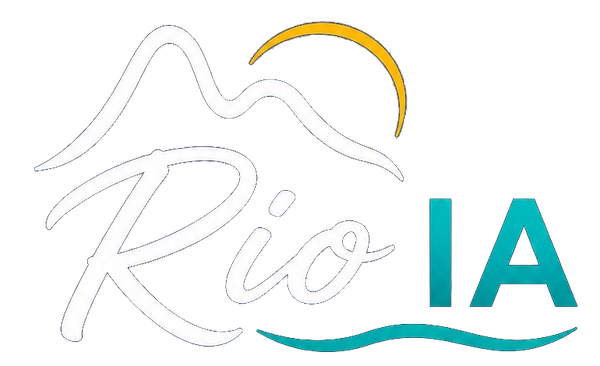

City tour · día completo
Un día en Río
Los íconos de la ciudad en una sola jornada: Cristo Redentor, Pan de Azúcar, Selarón y mucho más. Con guía, traslado, entradas y almuerzo incluidos.
Por adulto, con entradas al Cristo y al Pan de Azúcar, traslado, guía y almuerzo. Niños con descuento.
El recorrido

Cristo Redentor
Subimos al Corcovado para ver la ciudad entera a los pies del Cristo. La entrada está incluida.

Pan de Azúcar
El bondinho más famoso de Río, con la bahía de Guanabara de fondo. Entrada incluida.

Escadaria Selarón
Los escalones de azulejos de todo el mundo, el rincón más colorido de Río.

Catedral Metropolitana
La catedral en forma de pirámide, única en el mundo.

Maracanã
Parada en el templo del fútbol brasileño, por fuera.

Sambódromo
Parada panorámica por fuera de la pasarela donde desfilan las escolas de samba en carnaval. (Foto del desfile: Tomaz Silva/Agência Brasil, CC BY 3.0 BR)
Qué incluye
- Guía durante todo el recorrido
- Traslado desde Zona Sur o Centro
- Entradas al Cristo Redentor y al Pan de Azúcar
- Almuerzo
No incluye
- Bebidas y postres
- Visita interna al Maracanã y al Sambódromo
Bueno saber
- Niños: hasta 2 años no pagan (en brazos); 3 y 4 años pagan solo el Pan de Azúcar; de 5 a 10 años, 50% de descuento.
- Llevá documento con foto, protector solar y ropa cómoda.
- No se permiten conservadoras ni drones.
Reserva
Te buscamos en tu alojamiento en Zona Sur o Centro.
Rio IA es una marca de SOLVAM TECNOLOGIA E TURISMO LTDA · CNPJ 70.060.622/0001-90 · Cadastur. Rio IA actúa como intermediaria de la reserva: el paseo lo presta un operador turístico habilitado. Itinerario sujeto al clima, al tránsito y a las condiciones del mar.